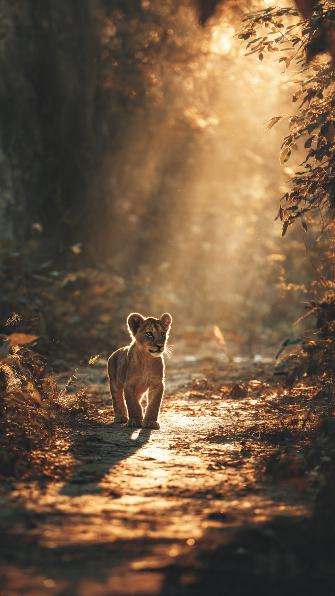
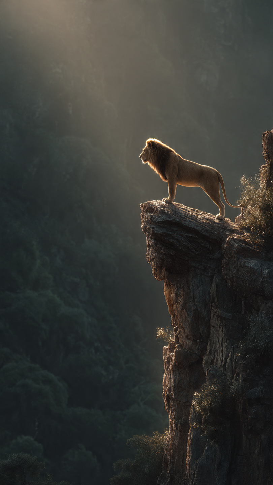

```html
🦁 الأسد الصغير الذي خاف من ظله | قصص أطفال
```
في أعماق الغابة الخضراء، كان يعيش أسد صغير اسمه ليو.
كان ليو لطيفًا ومرحًا، لكنه كان يملك سرًا صغيرًا لا يعرفه أحد...
كان يخاف من ظله!
كل صباح، كان يخرج ليلعب مع أصدقائه الحيوانات.
لكن عندما تشرق الشمس ويظهر ظله على الأرض، كان يقفز للخلف مذعورًا.
يقول:
"هناك شيء أسود يتبعني!"
فتضحك السناجب وتقول:
"يا ليو، إنه ظلك فقط!"
لكنه لم يكن يصدقهم.
في أحد الأيام، قرر ليو أن يذهب بعيدًا داخل الغابة.
وبينما كان يمشي، رأى ظلًا كبيرًا خلفه على الأشجار.
توقف قلبه من الخوف، وبدأ يركض بسرعة.
ركض بين الأشجار، وقفز فوق الحجارة، حتى وصل إلى مكان لم يعرفه من قبل.
هناك وجد كهفًا صغيرًا.
اختبأ داخله وهو يرتجف.
وبعد قليل، سمع صوتًا هادئًا يقول:
"لماذا تهرب مني؟"
نظر ليو حوله بخوف.
فلم يجد أحدًا.
ثم لاحظ أن الصوت يأتي من الأرض...
من ظله!
قال الظل:
"أنا لست عدوك يا ليو."
"أنا معك منذ ولادتك، وأرافقك في كل مكان."
نظر ليو بدهشة.
لأول مرة، بدأ يفكر...
هل كان يخاف من شيء كان يحميه دائمًا؟
لكن قبل أن يعرف الحقيقة كاملة...
حدث شيء غريب داخل الكهف.
بدأ ظل ليو يتحرك بطريقة لم يرها من قبل.
📷 الصورة رقم 1

نظر ليو إلى ظله بدهشة.
كان الظل يتحرك على جدار الكهف، لكنه لم يكن مخيفًا كما كان يعتقد.
بل كان يقلد حركاته بطريقة مضحكة.
عندما رفع ليو قدمه، رفع الظل قدمه.
وعندما ابتسم ليو، ابتسم الظل معه.
بدأ الأسد الصغير يضحك لأول مرة.
قال الظل:
"كنت دائمًا تهرب مني، لكنك لم تحاول أن تعرف من أنا."
جلس ليو بجانبه وقال:
"كنت أظنك شيئًا مخيفًا."
أجابه الظل:
"الخوف يجعل الأشياء العادية تبدو أكبر مما هي عليه."
قرر ليو أن يعود إلى الغابة، لكنه هذه المرة لم يهرب عندما رأى ظله.
وعندما وصل إلى أصدقائه، وقف أمام الشمس وقال بفخر:
"انظروا! لقد عرفت سر الظل."
اقتربت منه السنجابة وقالت:
"وماذا اكتشفت؟"
ابتسم ليو وقال:
"اكتشفت أنني كنت أخاف من صديق يرافقني دائمًا."
فرح أصدقاؤه لأنه أصبح أكثر شجاعة.
لكن في تلك اللحظة، ظهرت مشكلة جديدة.
فقد لاحظت الحيوانات أن جزءًا كبيرًا من الغابة أصبح مظلمًا، وأن النباتات بدأت تذبل.
قالت البومة:
"هناك شيء يمنع ضوء الشمس من الوصول إلى الغابة."
نظر الجميع إلى ليو.
وقال الظل له:
"ربما حان الوقت لأثبت لك أنني لست مجرد ظل..."
"بل يمكنني مساعدتك."
وهكذا بدأت مغامرة جديدة لإنقاذ الغابة.
📷 الصورة رقم 2

انطلق ليو مع أصدقائه للبحث عن سبب الظلام الذي غطّى جزءًا من الغابة.
كان الطريق صعبًا، لكن ليو لم يشعر بالخوف هذه المرة.
فقد أصبح يعرف أن الشجاعة لا تعني ألا نخاف أبدًا، بل أن نحاول رغم الخوف.
وصلوا إلى أعلى تل في الغابة، وهناك وجدوا شجرة ضخمة قديمة تحجب ضوء الشمس بأغصانها الكثيفة.
لكن المشكلة لم تكن في الشجرة...
بل في أنها كانت حزينة.
اقترب ليو منها وسألها:
"لماذا أنت حزينة؟"
أجابت الشجرة:
"لقد ابتعد عني الجميع، وأصبحت أشعر أنني غير مهمة."
فكر ليو قليلًا، ثم قال:
"كل شيء في الغابة له قيمة، حتى الظل الذي كنت أخاف منه كان يساعدني ويحميّني من الشمس."
عندما سمعت الشجرة كلماته، بدأت أوراقها تتحرك بسعادة.
فتحت أغصانها، ودخلت أشعة الشمس من جديد إلى الغابة.
عادت الأزهار للنمو، وعادت الحيوانات للعب والمرح.
اقتربت الحيوانات من ليو وقالت:
"لقد أصبحت أسدًا شجاعًا!"
ابتسم ليو وقال:
"لم أصبح شجاعًا لأنني لم أخف..."
"بل لأنني تعلمت أن أفهم ما أخاف منه."
ومنذ ذلك اليوم، لم يعد ليو يخاف من ظله أبدًا.
بل أصبح ينظر إليه بابتسامة، لأنه عرف أن بعض الأشياء التي نخاف منها قد تكون أصدقاء لنا طوال الوقت.
🦁🌳 انتهت القصة 🌳🦁
العبرة:
لا تحكم على شيء قبل أن تفهمه، فربما يكون ما تخشاه هو ما يساعدك ويحميك.